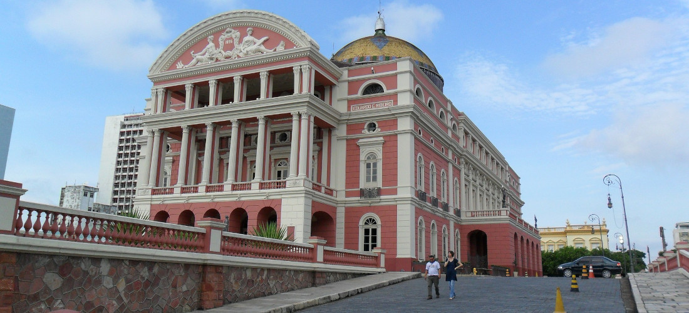

Manaus
Formas de pagamento: 5x600 parcelas, R$ 125,00 desconto à vista
Destino

O encontro das águas é um fenômeno natural, que ocorre na confluência entre o Rio Negro, de água preta e o Rio Solimões, de água barrenta.
Locais

Situado no centro histórico da cidade, o Palacete Provincial abriga um conjunto de museus.
Compras

O Mercado Municipal é um dos centros de comercialização mais famosos de Manaus.